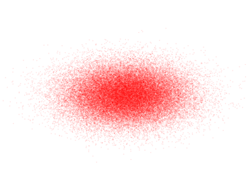

Gaussian Processes
Def: A Gaussian Process is a collection of random variables, any finite number of which have a joint Gaussian distributionThis article will focus on Gaussian process that map one input dimension to one output dimension. Gaussian processes offer a way to take knowledge of a function at certain points and use that knowledge to place a probability distribution over the value of the function at other points. For example, given that we know the value of a function at x=-1, x=0, x=1, and x=2, a particular Gaussian Process might make the following predictions for the values of the function for the function on the interval from -3 to 4:

Overview
Multivariate Gaussian Distribution
The most natural extension of a Gaussian distribution to multiple dimensions seems to be \[ \begin{bmatrix} \mathcal{N}(\mu_1, \sigma_1) & \mathcal{N}(\mu_2, \sigma_2) & \dots & \mathcal{N}(\mu_n, \sigma_n) \end{bmatrix} \] In two dimensions, the result would be:
A multivariate Gaussian distribution is a bit more powerful, and also lets the dimensions be correlated with each other. Visually, this lets use represent ellipse-shaped distributions. Practically it means that knowing about the value of the distribution along one dimension can give you some knowledge about its value along another dimension.

We represent a D-dimensional multivariate Gaussian distribution using the typical normal distribution notation "$\mathcal{N}(\mu, \sigma^2)$", but use a vector of means and a matrix of variances and covariances: \[ p(X_1 = x_1, X_2 = x_2, X_3 = x_3) = \mathcal{N}(\vec{\mu}, \Sigma) \] $\vec{\mu}$ contains $D$ elements and $\Sigma$ is a $D \times D$ matrix. The diagonal of $\Sigma$ contains the variance of each variable, while $\Sigma_{ij}$ represents the covariance between dimensions $i$ and $j$. $\Sigma$ is symmetric and positive semi-definite.
When we say that "knowing about the value of the distribution alongn one dimension can give you some knowledge about its value along another dimension", what we're really talking about is conditioning. In other words, starting with the joing distribution: \[ p(Y = y, X = x) = \mathcal{N}(\vec{\mu}, \Sigma) \] And trying to determine a posterior: \[ p(Y=y | X=x) = \dots \] Most of what is described on this page can be derived once one knows the above expression. We give this expression now, but in matrix form, which extends the solution to describing a posterior for multiple dimensions, given the values at multiple other dimensions. Unsurprisingly, the posterior is another multivariate Gaussian!
Suppose that, of the $D$ dimensions, you know the first $N$ dimensions. Then let \[ \Sigma = \begin{bmatrix} \Sigma_{11} & \Sigma_{12}\\ \Sigma_{21} & \Sigma_{22} \end{bmatrix} \] So that $\Sigma_{11}$ is the covariance matrix of the first $N$ dimensions and $Sigma_{22}$ is the covariance matrix of the remaining dimensions. Also recall our prior: \[ p(X_1, X_2) = \mathcal{N}(\vec{\mu}, \Sigma) \] Then the posterior is:
\[ p(X_2 | X_1) = \mathcal{N}(\vec{\mu}_{2|1}, \Sigma_{22|1})\] Where \[\vec{\mu}_{2|1} = \vec{\mu}_2 + \Sigma_{21} \Sigma_{11}^{-1} (X_1 - \vec{\mu}_1)\] \[\Sigma_{22|1} = \Sigma_{22} - \Sigma_{21} \Sigma_{11}^{-1} \Sigma_{12}\]Gaussian Processes
A Gaussian Process assigns every possible input-value a "dimension" in a multivariate Gaussian distribution. For example, suppose you have a function you are trying to "learn" that takes in either a zero or a one and spits out a real number: \[ f: \{0, 1\} \rightarrow \mathbb{R} \] Then in the image below, one could say that the "x-axis" represents our belief over the value of $f(0)$ and the "y-axis" represents our belief over the value of $f(1)$. If we know the value of $f(0)$ (by observing it), then this may give us some information about the value of $f(1)$. As noted above, conditioning on our knowledge of $f(0)$ yields a normal distribution over $f(1)$.
But many real world problems have uncountably many possible inputs. A far more common case is a function that maps numbers to numbers: \[ f: \mathbb{R} \rightarrow \mathbb{R} \] A Gaussian Process will reason about this the exact same way it reasoned about the discrete case: if will form a Gaussian distribution over every possible input-value — but in this case the distribution is infinite dimensional. Then it will look at the values/dimensinos it knows (i.e. the "training set" or "observations") and use this knowledge to compute a new multi-variate distribution over all the other points.
At first blush, it seems rather dubious that one could computationally use the machinery we used to condition finite-dimensional multivariate Gaussian distributions on infinite-dimensional ones... and such skepticism would be well place! Recall the definition from the beginning of the article: Def: A Gaussian Process is a collection of random variables, any finite number of which have a joint Gaussian distribution
The key is that we only ever care about the Gaussian distribution at a finite number of dimensions. For example, if you recall the original example:
We only know the input at 4 locations, and so if we ever want to determine a prediction at some other point, we simply have to form a 5-dimensional multivariate Gaussian distribution and condition the dimension whose value we want on the dimensions whose values we know:
\[ p(f(x)\ |\ f(-1), f(0), f(1), f(2)) = \dots\]
Since we don't know what x-values we will observe and what x-values we will want to predict (until we're actually feeding our model data), we typically can't write out $\Sigma$ explicitly. Instead, we represent $\Sigma$ with a "kernel" function $k$ \[ k: \mathbb{R} \times \mathbb{R} \rightarrow \mathbb{R} \] For example, if we want to evaluate the above model at $x=0.5$, then we have: \[ \Sigma = \begin{bmatrix} k(-1, -1) & k(-1, 0) & k(-1, 1) & k(-1, 2) & k(-1, \frac{1}{2})\\ k(0, -1) & k(0, 0) & k(0, 1) & k(0, 2) & k(0, \frac{1}{2})\\ k(1, -1) & k(1, 0) & k(1, 1) & k(1, 2) & k(1, \frac{1}{2})\\ k(2, -1) & k(2, 0) & k(2, 1) & k(2, 2) & k(2, \frac{1}{2})\\ k(\frac{1}{2}, -1) & k(\frac{1}{2}, 0) & k(\frac{1}{2}, 1) & k(\frac{1}{2}, 2) & k(\frac{1}{2}, \frac{1}{2}) \end{bmatrix} \] Note that $k$ determines the covariance between two different inputs' outputs. In other words \[ k(x_1, x_2) = cov(f(x_1), f(x_2))\]
Another Perspective: Linear Regression
Let's switch gears to another perspective, which is "deriving" Gaussian processes from linear regression... TODO Let $X$ and $\vec{y}$ be your observations (i.e. your "training data"). The Bayesian approach to linear regression is to assume that \[ \vec{y} = X^T \vec{w} + \vec{\epsilon} \]For some vector $\vec{w}$, where $\epsilon$ is a normally distributed noise with mean=0 and standard deviation = $\sigma$. It turns out the maximum likelihood estimator for $w$ is the same line that minimizes squared error - i.e. linear regression.
What's interesting about this formulation of the problem is that, rather than merely a line, it yields a normal distribution at every x value. In other words, the probability distribution over the value $y_*$ at some $x_*$ is: \[ p(y_* | X, \vec{y}, \vec{x}_*) \propto \mathcal{N}(\mu = \vec{x}_*^Tw, \text{var} = \sigma^2) \]
Of course there are a wide number of nonlinear relationships that cannot be represented as a linear regression. A common trick to expand this same machinery to a wider class of functions is to use some function \[ \phi: \mathbb{R}^D \rightarrow \mathbb{R}^N \] to map data from a low dimensional space to a higher dimensional space, and then performing linear regression on the higher-dimensional vectors. For example, if you map $\mathbb{R}^1$ to $\mathbb{R}^4$ with: \[ \phi(x) = [1, x, x^2, x^3] \] then a linear regression on $\phi[X]$ is equivalent to finding the least-squares cubic polynomial. In essence, by choosing some $\phi$, you're claiming that you believe the data can be modeled as \[ \vec{y} + \vec{\epsilon} = \phi[X]^T \vec{w} \]
Kernel Trick
The least-squares solution (i.e. the MLE, assuming it is a linear function with Gaussian noise) is solved with the following formula: \[ p(y_* | \vec{x}_*, X, \vec{y}) = \mathcal{N}(\frac{1}{\sigma^2} \phi(x_*)^T A^{-1} \phi[X] y, \phi(x_*)^T A^{-1} \phi(x_*)) \] Where $A = \sigma^{-2}\phi[X] \phi[X]^T + \Sigma^{-1}$, where $\Sigma$ is the covariance matrix of the prior on $\vec{w}$. Note that $A$ is a square matrix and its size is equal to the dimensionality of $\phi(x)$
The kernel trick is a trick in machine learning (and elsewhere) which, informally, involves swapping the dimensionality of your data points with the number of data points you have. If you have data with high dimensionality and few points, you can often rephrase the problem as having low dimensionality and a high number of points.
To do this, we will suppose we have some function $k(x_1,x_1) = \phi(x_1)^T \Sigma \phi(x_2)$ — i.e. the inner product of the points $x_1$ and $x_2$ (after their feature expansion). This function is called the kernel, and will eventually play the same role as the "k" function described in the "Gaussian Processes" section of this page.
We will also extend this notation to matrices (i.e. sets of points): \[ k(A, B) = \begin{bmatrix} k(A_1, B_1) & k(A_1, B_2) & \dots & k(A_1, B_m)\\ k(A_2, B_1) & k(A_2, B_2) & \dots & k(A_2, B_m)\\ \vdots & \vdots & \ddots & \vdots \\ k(A_n, B_1) & k(A_n, B_2) & \dots & k(A_n, B_m)\\ \end{bmatrix} \] This notation allows us (after some thought) to rewrite the formula above as: \[ p(y_* | \vec{X}_*, X, \vec{y}) = \mathcal{N}(\mu, \sigma^2)\] \[\mu = k(X_*, X) k(X, X)^{-1} y,\] \[\sigma^2 = k(X_*, X_*) - k(x_*, X) (X, X)^{-1} k(X, X_*)\] An astute reader will note that this looks eerily similar to the formula for the posterior of a multivariate Gaussian given in the "Multivariate Gaussian Distribution" section: \[ p(X_2 | X_1) = \mathcal{N}(\vec{\mu}_{2|1}, \Sigma_{22|1})\] \[\vec{\mu}_{2|1} = \vec{\mu}_2 + \Sigma_{21} \Sigma_{11}^{-1} (X_1 - \vec{\mu}_1)\] \[\Sigma_{22|1} = \Sigma_{22} - \Sigma_{21} \Sigma_{11}^{-1} \Sigma_{12}\] And, indeed, they are nearly identical, except that the multivariate gaussian formulation need not assume that the mean value a priori is zero. In other words, if $\vec{\mu} = 0$, then both formulations are the same.
Why Did We Do This?
First note that $K$ is a $|X| \times |X|$ matrix, which means that, as promised, calculating predictions no longer scales with the dimensionality of the data, but with the number of datapoints we have... that is, assuming that $k(x_1, x_2)$ can be evaluated quickly. But considering that we defined $k(x_1, x_2$ as the inner product of $\phi(x_1)$ and $\phi(x_2)$, it seems clear that it does scale with the number of dimensions in the feature expansion.
What's key is that there are many (useful!) feature expansions whose corresponding kernel can be far more efficiently calculated than its corresponding $\phi$. This efficiency is taken to the extreme when $\phi$ maps to an infinite dimensional space — for instance, the famous $k(x_1, x_2) = e^{-(x_1 - x_2)^2}$ kernel. While an inner product of an infinite dimensional feature expansion would take forever, evaluating $e^{-(x_1 - x_2)^2}$ is nearly instantaneous!
That being said, it's probably not worth your time to "convert" a feature expansion you'd like to do into its corresponding kernel. Instead, consider what you think is a "good" measure of two points' similarity and choose a kernel that reflects that. Better yet, simply choose from some of the most popular kernels (some are listed at the bottom of this page). And remember: a kernel ultimately is a measure of the similarity of two points — it determines the covariance of their corresponding y values.
Example
Now that we've seen two explanations of Gaussian Processes — one directly derived from the probabalistic interpretation of conditioning multivariate Gaussians, and one from linear regression, let's return to our original example:
For this example, I used the kernel
\[k(x_1, x_2) = e^{-(x_1 - x_2)^2}\]
And the observations
\[
\begin{bmatrix}
(-1, 0)\\
(0, 2)\\
(1, 1)\\
(2, 0)\\
\end{bmatrix}
\]
Using the formula for conditioning on Gaussians, we can calculate the multivariate normal distribution for any finite number of points we want. In this case, I evaluated it at 700 evenly spaced points between -3 and 4, which gave me a 700-long $\vec{\mu}$ which represents the best guess (i.e. the center of the Gaussian) at each point. Plotting this gave me the red line.
I also got a covariance matrix out, and the diagonal of the covariance matrix gives us the variance of each distribution. If we take the square root and multiply by $1.96$ we can find a region for every $x$ that has a 95% chance of containing the "true" function value — this is the blue region.
Note that the red line hits every observed point exactly, and that our uncertainty at those points vanishes to zero, but the farther from those points we get, the less certain we are. This leads us to our next consideration:
Noise
As you may have noticed, I have been ignoring noise terms. Adding noise terms is a simple matter of adding $\sigma^2 I$ to $K(X,X)$. \[ p(y_* | \vec{X}_*, X, \vec{y}) = \mathcal{N}(\vec{\mu}, \Sigma)\] \[\mu = k(X_*, X) (K + \sigma^2 I)^{-1} y\] \[\Sigma = k(X_*, X_*) - k(x_*, X) (K + \sigma^2 I)^{-1} k(X, X_*)\]
Non-zero Prior
Another thing you may have noticed is that in the above image the function tends towards zero when it lacks any other information. While this may be completely reasonable in some situations, it would naturally be desirable to encode other priors.
Let $\bar{y}(X)$ yield your prior guess for every point in $X$. Then: \[ p(y_* | \vec{X}_*, X, \vec{y}) = \mathcal{N}(\vec{\mu}, \Sigma)\] \[\mu = \bar{y}(X_*) + k(X_*, X) (K + \sigma^2 I)^{-1} (y - \bar{y}(X))\] \[\Sigma = k(X_*, X_*) - k(x_*, X) (K + \sigma^2 I)^{-1} k(X, X_*)\] The effect of applying the prior $\bar{y}(x) = x$ to the example above is shown below. Note that the uncertainty at every point is unchanged from when we had a prior of zero.